Разработка сайта
В этом курсе
С чего начать разработку веб-сайта
Определим желаемый тип сайта, его структуру, а также рассмотри какими инструментавми и сервисами будем пользоваться для написания и размещения сайта
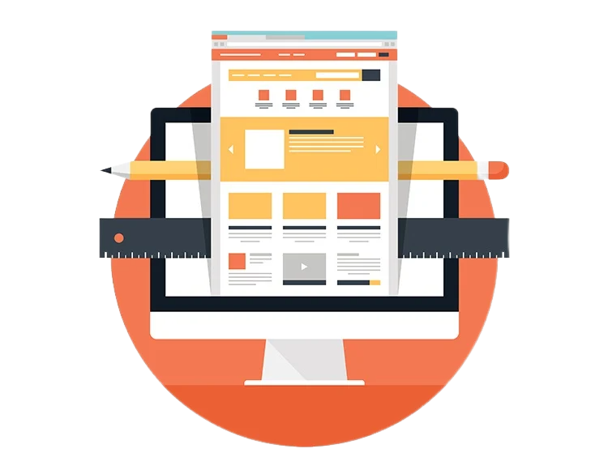
В современном цифровом мире веб-сайт — это не просто модный тренд, а необходимость для любого бизнеса, проекта или личного бренда. Независимо от того, являетесь ли вы начинающим предпринимателем, творческим деятелем или просто хотите поделиться своими идеями с миром, создание собственного веб-сайта открывает перед вами безграничные возможности.
Сайт, или веб-сайт (от англ. website: web — «паутина, сеть» и site — дословно — «место, сегмент, часть в сети»), также веб-узел — одна или несколько логически связанных между собой веб-страниц; также место расположения контента сервера. Обычно сайт в Интернете представляет собой массив связанных данных, имеющий уникальный адрес и воспринимаемый пользователями как единое целое. Веб-сайты называются так, потому что доступ к ним происходит по протоколу HTTP.
Типы сайтов
Прежде чем приступать к созданию сайта, нужно чётко понимать, какую задачу он будет решать. От этого напрямую зависит его структура, функционал и бюджет. Если сразу не определиться с типом сайта, велик риск потратить время и деньги на инструмент, который не будет приносить результат.
Информационный сайт
Информационный сайт — это веб-ресурс, предназначенный для предоставления пользователям полезной и актуальной информации по определенной теме. Такие сайты могут охватывать широкий спектр тем, включая новости, образование, здоровье, технологии и многое другое. Основная цель информационного сайта — предоставить пользователям доступ к качественному контенту, который отвечает на их вопросы и помогает решать проблемы.
Информационные сайты часто используются для привлечения трафика и монетизации через рекламу, партнерские программы или продажу собственных продуктов и услуг. Они могут быть полезны как для индивидуальных предпринимателей, так и для крупных компаний, стремящихся расширить свою аудиторию и повысить узнаваемость бренда.
Коммерческий сайт
Коммерческий сайт — это инструмент продаж, привлечения клиентов и взаимодействия с аудиторией. Он ориентирован на выполнение конкретных бизнес-задач: генерацию заявок, оформление заказов, регистрацию пользователей или продвижение услуг.
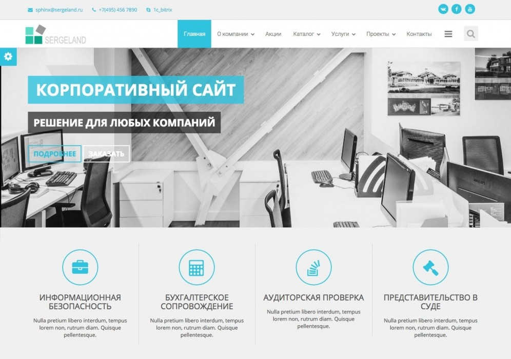
В отличие от информационных ресурсов, коммерческие платформы рассчитаны на конверсию трафика в действия. Чтобы добиться результата, важно правильно спроектировать структуру сайта, адаптировать контент под целевую аудиторию и обеспечить техническую стабильность.
Интернет-магазин
Интернет-магазин (англ. online store или e-shop) — сайт, торгующий товарами посредством сети Интернет. Позволяет пользователям онлайн, в своём браузере или через мобильное приложение, сформировать заказ на покупку, выбрать способ оплаты и доставки заказа, оплатить заказ. При этом продажа товаров осуществляется дистанционным способом.
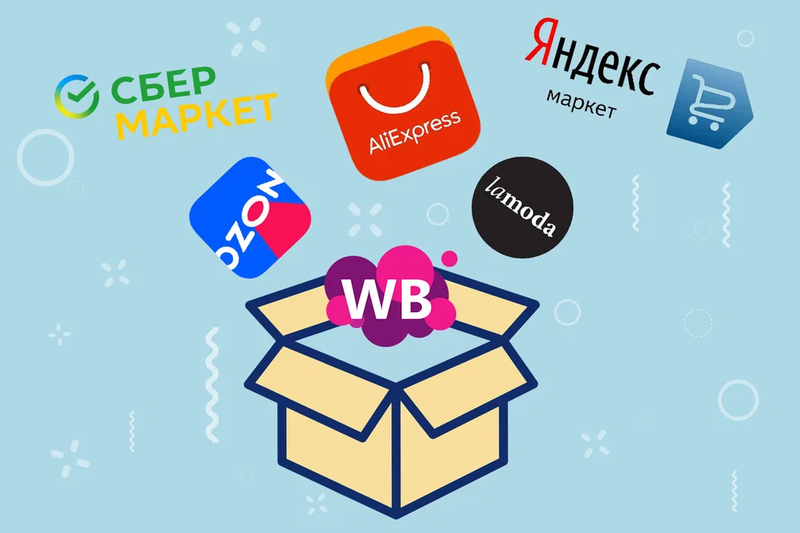
В отличие от обычного офлайн-магазина, интернет-магазин доступен покупателям круглосуточно и из любой точки мира, где есть доступ в сеть. Главная цель интернет-магазина – предоставить удобный дистанционный способ покупки для клиентов.
Сайт-визитка
Сайт-визитка — небольшой сайт, как правило, состоящий из одной (или нескольких) веб-страниц и содержащий основную информацию об организации, частном лице, компании, товарах или услугах, контактные данные.
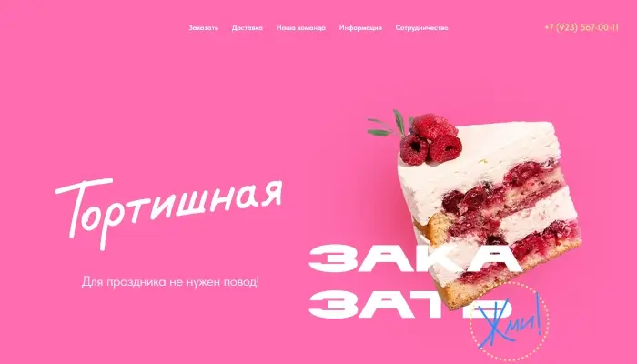
Часто сайт-визитку используют компании, которые не хотят нести большие затраты на создание отдельного сайта. Очень часто при покупке доменного имени для почты устанавливается сайт-заглушка или сайт-визитка.
Веб-форум
Веб-форум — интернет-сервис (веб-сервис) для общения между пользователями интернета (более двух участников) на одну тему или на несколько тем (зависит от специализации форума). Одна из форм социальных сетей.
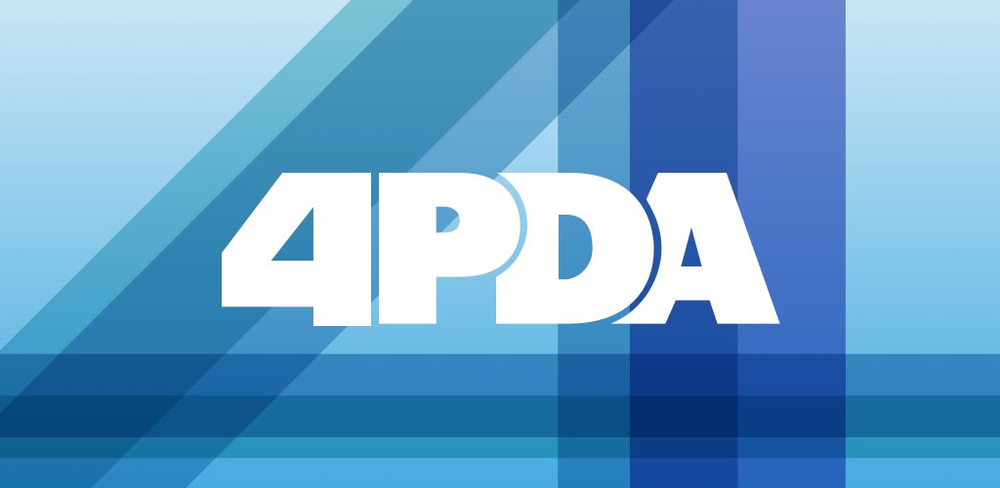
Суть работы форума заключается в создании пользователями (посетителями форума) своих Тем с их последующим обсуждением, путём размещения сообщений внутри этих тем.
Новостной сайт
Новостной сайт — это онлайн-платформа, предназначенная для публикации новостей и актуальной информации. Такие сайты могут охватывать широкий спектр тем, включая политику, экономику, спорт, культуру и многое другое.
Новостные сайты играют важную роль в информировании общества и могут стать источником дохода через рекламу и подписки. В современном мире, где информация распространяется с невероятной скоростью, новостные сайты становятся важным инструментом для быстрого доступа к актуальным событиям и аналитике.
Блог
Блог (англ. blog, от web log — интернет-журнал событий, интернет-дневник) — веб-сайт, основное содержимое которого — добавляемые пользователем записи, содержащие текст, изображения или мультимедиа.
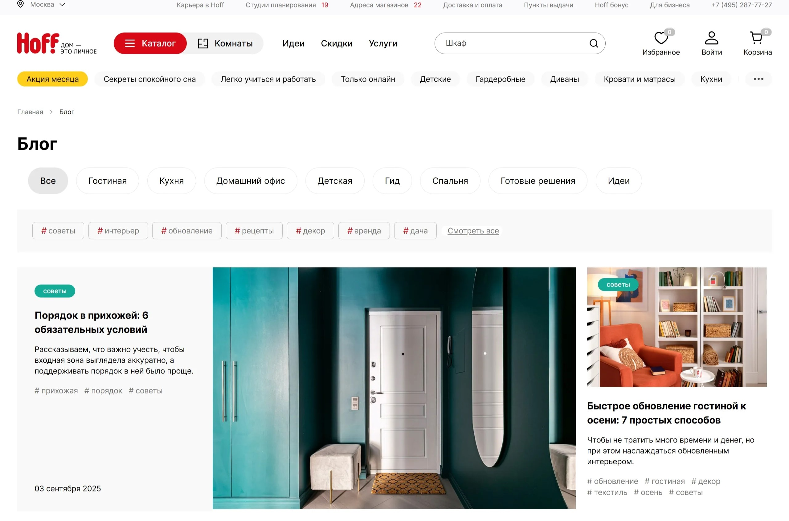
Чаще всего информация отображается в обратном хронологическом порядке: первыми идут статьи и посты, которые были опубликованы последними.
Структура сайта
Структура сайта– это иерархическая структура его страниц и взаимосвязь между ними. Если они правильно расположены, поисковым роботам будет удобно находить нужную информацию, а посетителям – перемещаться между разными разделами.
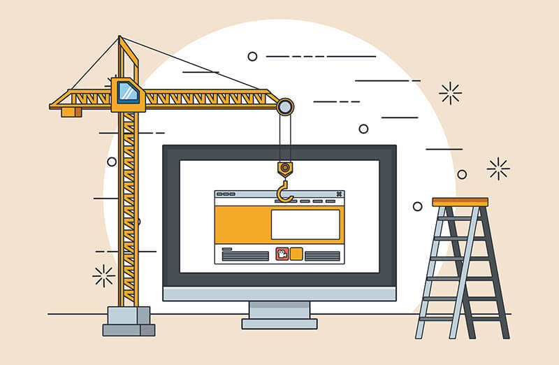
Виды структуры сайта
Структура интернет-сайта имеет два вида – она может быть внешней и внутренней.
Внешняя
- которую визуально могут видеть посетители, включает следующие элементы:
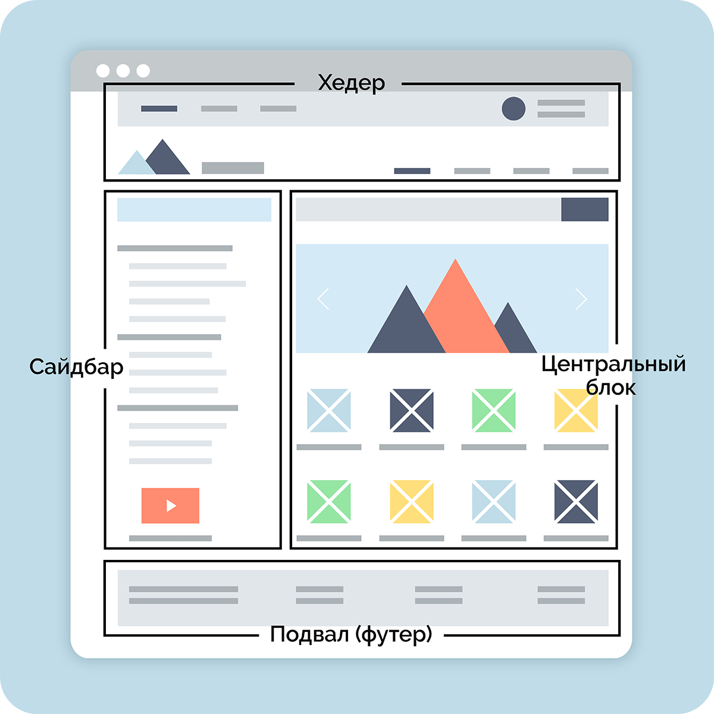
Хедер (шапка) – блок в верхней части ресурса с названием, логотипом, фото продукта. Здесь же часто размещается баннерная реклама.
Сайдбар – боковая панель, располагающаяся в правой или левой части страницы. Sidebar предназначен для дополнительной информации, которая привлекает внимание посетителя и мотивирует его дольше задержаться на сайте. Это могут быть, к примеру, анонсы интересных материалов или акций, нового контента.
Центральный блок – это основные данные в центре страницы, за которыми посетитель зашел на сайт. Она должна быть хорошо структурированной и заметной, иметь заголовки.
Подвал (футер) – нижняя часть сайта, где обычно располагаются контакты, телефон, адрес и полезные ссылки для быстрой навигации (например, связь с технической поддержкой).
Внутренняя структура
– это схема для создателей сайта за интерфейсом, она состоит из категорий и материалов, связанных между собой. Внутренняя структура может быть:
Линейная, в этом случае пользователь поочередно видит каждую страницу. Все они при этом ссылаются на главную и одновременно друг на друга. Сайт в этом случае выглядит так, что читатель последовательно проходит путь - все страницы, знакомясь с содержанием каждой из них. Подобная структура подходит для мероприятий для презентаций или для портфолио.
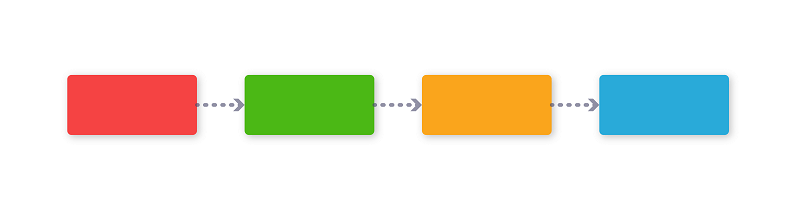
Линейная с ответвлениями – тип, похожий на предыдущий, и все сказанное о нем, относится и к данному виду. С той разницей, что страницы объединены в блоки. К примеру, это может быть портфолио студии дизайна, которая представляет свои работы в разных стилях.
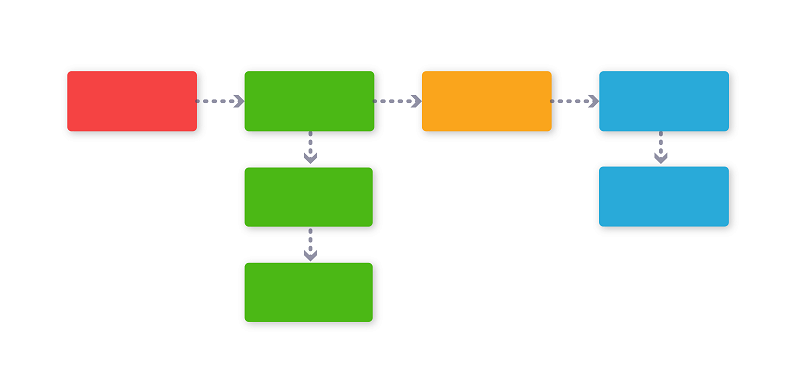
Блочная, из нескольких страниц, на каждую из которых приводят ссылки с остальных. Это достаточно специфичная структура, и ее используют далеко не все площадки.
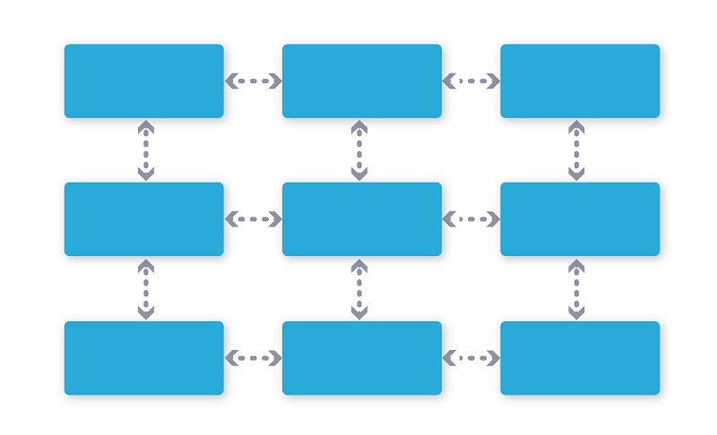
Древовидная, самая популярная. Предполагает, что для каждого направления есть отдельная ветка, то есть разделы и подкатегории. Разделы при этом линкуются друг с другом и с главной.
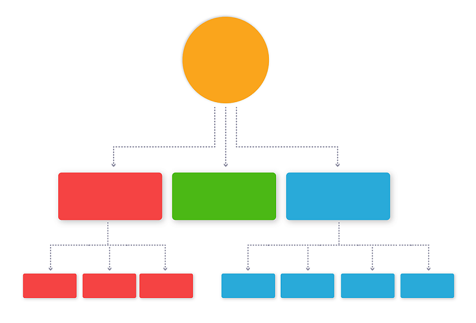
HTML, CSS и JavaScript
Любой сайт, который вы когда-либо открывали, построен на трёх китах: HTML, CSS и JavaScript. Это та база, которая не меняется независимо от сложности проекта — будь то простая визитка или огромный интернет-магазин. HTML отвечает за структуру и наполнение (скелет), CSS — за внешний вид (одежду), а JavaScript добавляет интерактивность (то есть оживляет страницу). С этими языками вы будете сталкиваться на всём пути создания сайта, даже если используете конструкторы или фреймворки — либо напрямую работая с кодом
HTML
HTML — это стандартизированный язык гипертекстовой разметки, используемый для создания веб-страниц в интернете. Он представляет собой набор элементов, которые служат скелетом любой веб-страницы и задают ее базовую структуру. Одни из них обозначают заголовки на сайтах, другие — абзацы, третьи — списки и цитаты и т. д. Именно HTML-элементы определяют, как содержимое страницы будет отображаться в браузере.
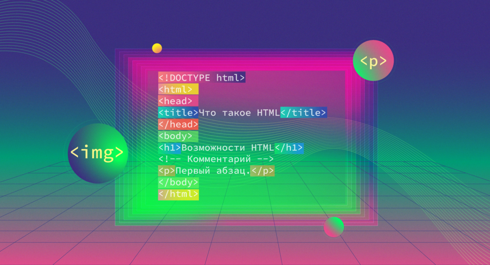
HTML состоит из тегов — команд, которые указывают браузеру, как отображать помещённый в них текст. Это и есть элементы веб-страницы. У каждого тега есть имя, которое заключается в угловые скобки < и >.
Когда вы заходите на сайт, браузер подгружает HTML-файл с информацией о структуре и контенте веб-страницы. HTML как бы выстраивает визуальный фундамент сайта, но не «запускает» сайт самостоятельно. Он всего лишь указывает, где располагаются элементы, какой у них будет базовый дизайн, откуда брать стили для элементов и скрипты (обычно их пишут на JavaScript).
Вот, например, как выглядит сайт Skillbox Media на одном HTML:
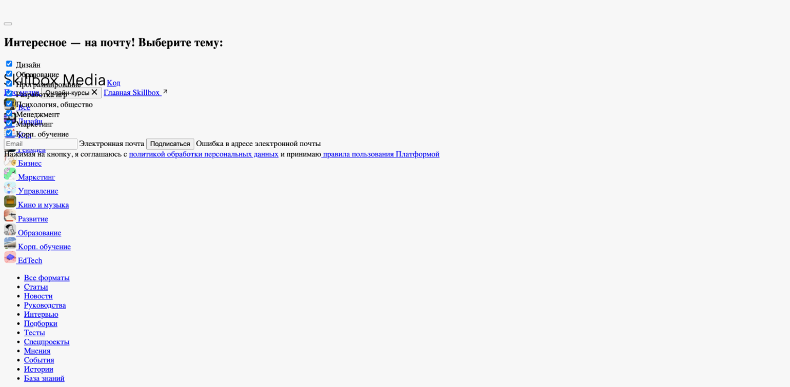
Сколько времени нужно, чтобы освоить HTML?
Основы, которых хватит на создание примитивных страниц, можно изучить за час. То есть быстрее, чем была написана эта статья. Но мастерство приходит с практикой. Мало просто создать каркас — нужно убедиться, что он везде правильно отображается.
Специалисты, которые могут написать не кривой адаптивный сайт, ценятся у работодателей. Но быть просто HTML-верстальщиком невыгодно. Сегодня это довольно редкая и низкооплачиваемая профессия. Лучше сразу изучать фронтенд- или бэкенд-разработку, а HTML обязательно пригодится в процессе.
CSS
CSS — это язык стилей, с помощью которого оформляют веб-страницы. Он определяет, как именно должны отображаться элементы HTML, включая макет, цвета, шрифты и другие визуальные аспекты. CSS используют для того, чтобы отделить содержание веб-страницы от её оформления. За счёт этого страницы удобнее изменять и поддерживать.
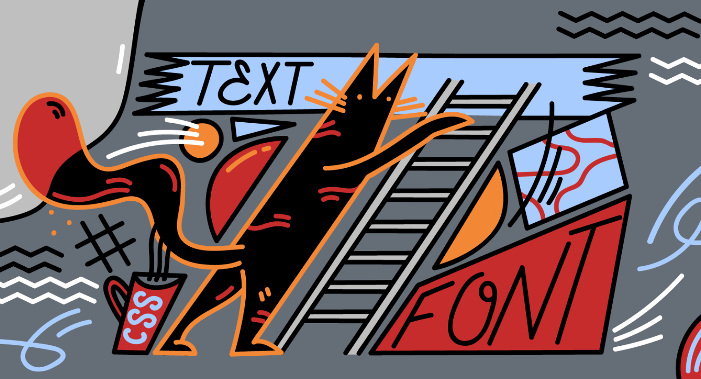
В таблице стилей мы прописываем стили (правила) оформления. Каждое правило состоит из селектора и блока объявлений. Селектор определяет, на какие части документа распространяется правило. Блок объявлений помещается в фигурные скобки и состоит из одного или более объявлений, разделенных точкой с запятой. На самом деле это очень просто. Вот как выглядит простейшее правило с двумя свойствами для двух селекторов в таблице стилей:

Будущее за CSS3
Cascading Style Sheets3 (CSS3) — третье поколение стандарта CSS, которое сейчас находится в активной разработке. Как HTML5 для HTML, так и CSS3 для CSS стал самой масштабной ревизией в истории стандарта.
В отличие от предыдущих версий, спецификация разбита на модули, разработка и развитие которых идут независимо. То есть CSS3 — это тоже не просто стандарт, а «набор технологий», как и HTML5. Эти технологии понемножку проникают в браузеры. Каждая новая версия Chrome или Firefox поддерживает какой-то новый кусочек CSS3, несколько новых свойств. То есть с каждым месяцем расширяются наши возможности по оформлению документов.
JavaScript
JavaScript — это язык управления элементами на сайте. Он умеет красить кнопки, запускать анимации, загружать эффекты, и всё это — без перезагрузки страницы. Например, вы нажали кнопку «Нравится» — вспыхнуло красное сердечко. Или навели курсор на три точки, и выпало меню. В обоих случаях на странице сработал скрипт. А JavaScript как раз главный по ним в интернете — отсюда и его название.
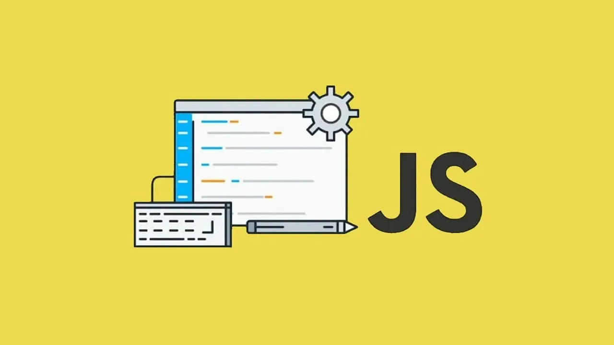
Где нужен JavaScript
JavaScript — это серьёзный и мощный язык, на котором можно не только красивые анимации рисовать, но и писать сложные программы для бизнеса.
Веб-приложения
Возьмём, к примеру, «Google Документы». Вспомните, как много там функций: можно менять шрифт, выравнивать абзацы, вставлять картинки. Без JavaScript нам бы пришлось перезагружать страницу после каждого действия — проще плюнуть и уйти в Word. А так у нас есть удобная облачная альтернатива.
Бэкенд
JavaScript умеет запускаться на сервере и может быть полноценным бэкенд-языком — как Python, С# и Java. Подключаем к нему специальный движок Node.js, и можно писать вообще что угодно: чаты, соцсети, компьютерные программы и так далее. В Netflix, например, пишут на нём и серверную логику, и интерфейс.
Расширения для браузера
Расширения — это простые скрипты, которые добавляют в браузер новые функции. Они умеют блокировать рекламу, делать скриншоты, обходить блокировки сайтов (мы этого не говорили). Все расширения пишут на JavaScript — достаточно выучить его, и расширяйте сколько вздумается.
Чем JavaScript отличается от Java
Многие начинающие разработчики думают, что Java и JavaScript — родственники. Мол, сначала нужно выучить Джаву, а придачу к ней ещё Скрипт, и дело в шляпе :) На самом деле это совсем разные языки — они по-разному устроены и используются для разных задач.
Типизация
В любом компьютерном языке есть типы данных: строки, числа, символы и так далее. Но каждый язык по-разному себя с ними ведёт — это называется типизацией. В языках вроде Java она статическая — если мы вводим числовую переменную, нужно сначала задать её тип. Компьютер смотрит на тип и понимает: сейчас будет математика.
А в JavaScript типизация динамическая, поэтому типы задавать не нужно. С одной стороны, свобода и рок-н-ролл, а с другой — возможны разные аномалии. Например, у JavaScript можно спросить, что больше — банан или 150, и получить ответ:

Java на такие фокусы начнёт ругаться:
Зато так безопаснее — язык защищает программиста от его собственных ошибок. Не сравнивайте бананы с числами!
Компиляция
В отличие от JavaScript, Java — это компилируемый язык. Перед тем как запустить Java-код, его нужно скомпилировать — то есть перевести на машинный язык. Зато потом, когда мы кликнем на иконку программы, код сразу начнёт выполняться. При повторном запуске ничего компилировать не нужно.
Скрипты же сначала перехватывает интерпретатор, который делает примерно то же самое, но в режиме реального времени. То есть при каждом запуске скрипта код JavaScript переводится в машинный.
Применение
Магия языка Java — в его виртуальной машине (JVM). Виртуальная машина позволяет запускать код на любом устройстве, где она установлена. Удалось запустить машину — запустится и программа. Поэтому на Java удобно писать софт для самых разных устройств: серверов, компьютеров, смартфонов, банкоматов и даже роботов.
У JavaScript совсем другая задача — управлять элементами страницы. Можно написать полезный скрипт и добавить функций на сайт. А если ещё освоить Node.js, то вообще никакой другой язык не нужен — можно хоть розетку запрограммировать.
Инструменты для разработки сайта
Создание современного веб-сайта — это комплексный процесс, требующий не только знания языков разметки и программирования (HTML, CSS, JavaScript), но и владения специализированным программным обеспечением. Правильно подобранные инструменты значительно ускоряют разработку, помогают избежать ошибок и позволяют создавать качественные, адаптивные и производительные веб-страницы.
Среды для написания кода (Редакторы и IDE)
Это основа рабочего места разработчика — программы, в которых создается и редактируется исходный код сайта. Для начинающих и веб-разработки в целом отлично подходят современные текстовые редакторы с расширенными функциями.
Visual Studio Code
Visual Studio Code (VS Code) — это кросс-платформенный редактор кода от компании Microsoft, разработанный на базе фреймворка Electron. С его помощью можно разрабатывать кросс-платформенные десктопные приложения, используя веб-технологии.

Суперсила VS Code в том, что он не привязан к определённому языку программирования, поэтому с его помощью можно создавать сайты, мобильные приложения, работать с базами данных и тестировать сервисы. Огромная библиотека плагинов позволяет расширять функции редактора, а если не удастся найти подходящий плагин, то всегда можно написать свой.
Brackets
Brackets — это бесплатный текстовый редактор с открытым исходным кодом, изначально разработанный Adobe и оптимизированный для веб-разработки. В отличие от многих универсальных IDE, Brackets создан с фокусом на HTML, CSS и JavaScript, что делает его идеальным выбором для фронтенд-разработчиков.
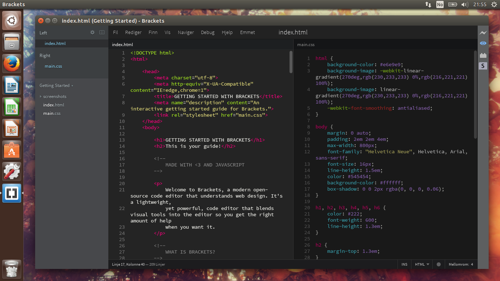
Ключевая философия Brackets заключается в предоставлении только необходимых инструментов, сохраняя интерфейс чистым и понятным. Этот минималистичный подход значительно сокращает кривую обучения и позволяет сосредоточиться на написании кода, а не на освоении самого редактора. 🎯
Notepad++
Notepad++ — это бесплатный текстовый редактор и редактор исходного кода с открытым исходным кодом для операционной системы Windows. Созданный разработчиком Дон Хо в 2003 году, этот редактор написан на C++ и использует мощный компонент редактирования Scintilla. Главная идея Notepad++ — минимизировать использование ресурсов компьютера при максимальном увеличении функциональности.
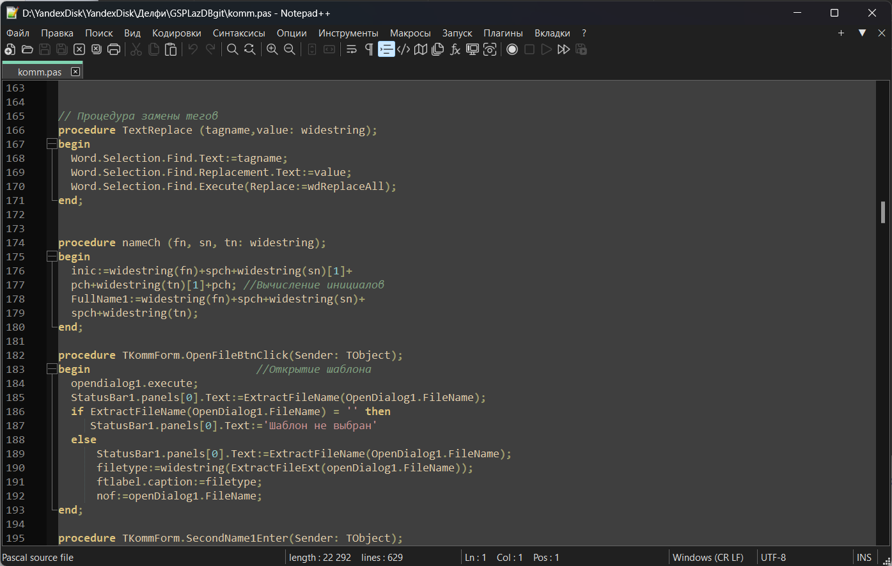
Уникальность Notepad++ кроется в его балансе между простотой и мощностью. В отличие от тяжеловесных IDE, он загружается за секунды и не перегружает систему, но при этом предлагает инструментарий, достаточный для профессиональной разработки.
Atom
Atom представляет собой результат эволюционного подхода к созданию редакторов кода. В отличие от многих конкурентов, он построен с использованием веб-технологий (HTML, JavaScript, CSS и Node.js), но работает как настольное приложение благодаря Electron — фреймворку, позволяющему создавать кроссплатформенные приложения. Это делает Atom одновременно мощным и доступным для расширения даже тем разработчикам, которые имеют опыт только в веб-технологиях.
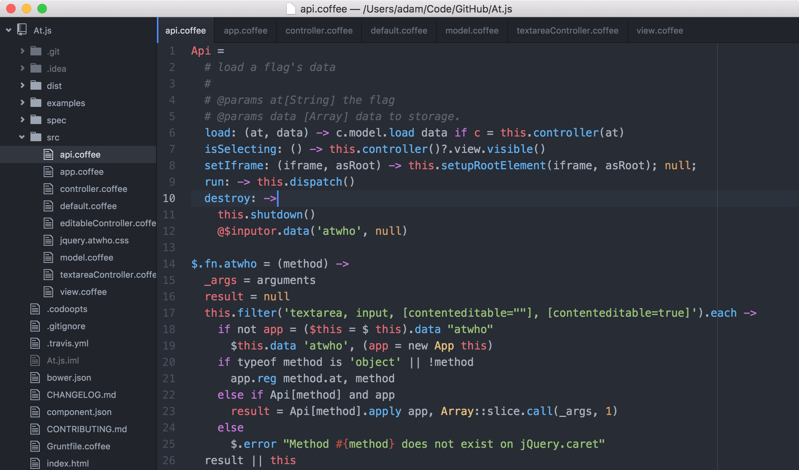
Философия Atom заключается в его слогане: "A hackable text editor for the 21st Century" (Хакабельный текстовый редактор для 21-го века). Это означает, что редактор спроектирован так, чтобы его можно было модифицировать и настраивать до мельчайших деталей. 🛠️
Графические редакторы
Веб-разработка неразрывно связана с визуальным проектированием. Для создания современного сайта недостаточно просто написать код — необходимо предварительно спроектировать его внешний вид, продумать расположение элементов, цветовую гамму и взаимодействие с пользователем. Инструменты этого класса позволяют разработчикам и дизайнерам работать над общей задачей, создавая макеты, которые затем превращаются в рабочий код.
Figma
Figma — это безусловный лидер и стандарт индустрии для проектирования интерфейсов. Её главное преимущество — кроссплатформенность и работа через браузер. Figma работает где угодно: на Windows, Mac, Linux и даже на Chromebook, при этом не требуя мощного компьютера, так как все вычисления происходят в облаке . Для веб-разработчика Figma ценна тем, что она построена на тех же принципах, что и вёрстка на HTML и CSS: здесь используется Flexbox-подобная система автоматического позиционирования элементов (Auto Layout), работа со стилями текста и цветовыми переменными. С макета в Figma можно напрямую копировать значения отступов, размеров, цветов и даже готовый CSS-код отдельных элементов, что значительно ускоряет перенос дизайна в код.
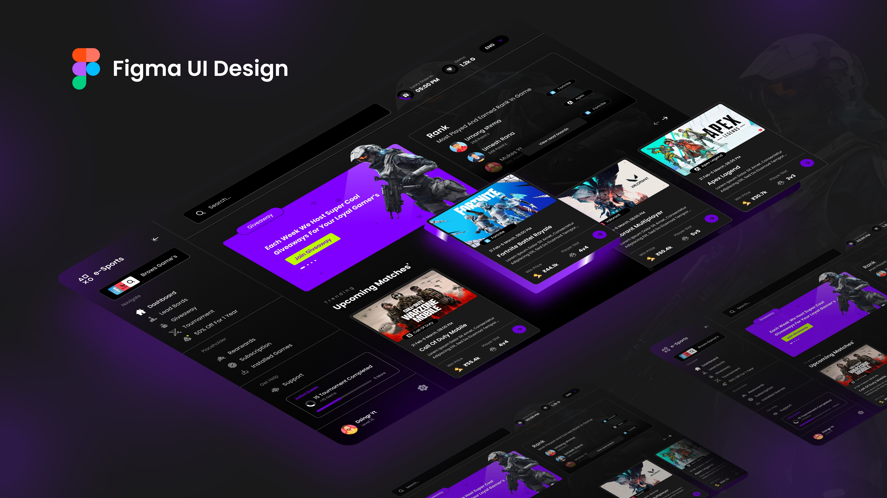
Кроме того, Figma позволяет организовать командную работу: несколько человек могут одновременно редактировать один файл, а заказчик или разработчик может оставлять комментарии прямо на макете . Для учебных и небольших коммерческих проектов функционала бесплатной версии более чем достаточно .
Sketch
Sketch — это один из самых известных ветеранов в среде дизайнеров, который появился раньше Figma. Это векторный редактор, который долгое время был стандартом для дизайна интерфейсов на macOS . Он отлично интегрируется с операционной системой Apple, работает очень плавно и имеет огромную библиотеку плагинов, расширяющих его функционал . Однако у него есть существенное ограничение: он работает только на Mac . Для Windows или Linux он недоступен. Стоимость начинается от $10 в месяц . Он идеально подойдет, если вы работаете на Mac и ищете мощный инструмент для профессионального дизайна.
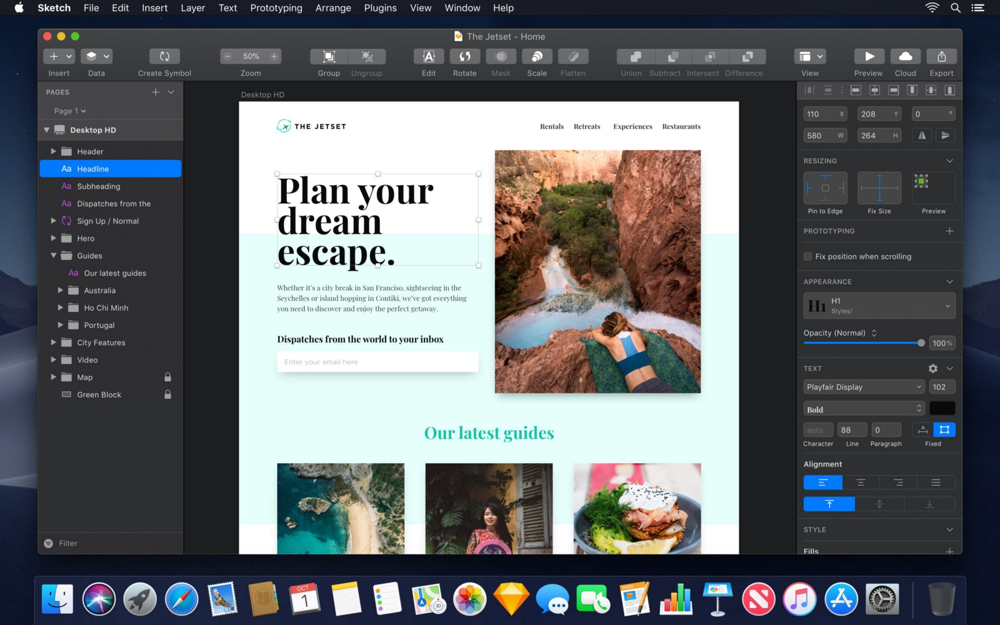
Adobe XD
Adobe XD — это инструмент для дизайна и прототипирования от компании Adobe. Он тесно интегрирован с другими программами Adobe, такими как Photoshop и Illustrator, что очень удобно, если вы уже работаете в их экосистеме . Adobe XD позволяет не только рисовать статичные макеты, но и создавать интерактивные прототипы с анимацией переходов . Он доступен как на Windows, так и на macOS, что делает его более универсальным, чем Sketch. Для веб-разработчика плюс в том, что макеты из XD можно использовать для генерации CSS-кода.

Pixso
Pixso — это мощный китайский аналог Figma, который активно набирает популярность, особенно в России, из-за рисков блокировки западных сервисов . Его ключевое преимущество — возможность импортировать файлы прямо из Figma (формат .fig) с сохранением всех слоев, стилей и автолейаутов, что делает переход на него практически безболезненным . Pixso работает в браузере и на десктопе, поддерживает командную работу в реальном времени, а также предлагает AI-функции для генерации элементов интерфейса . Важно для разработчика: в Pixso есть функция генерации CSS-кода из макетов .
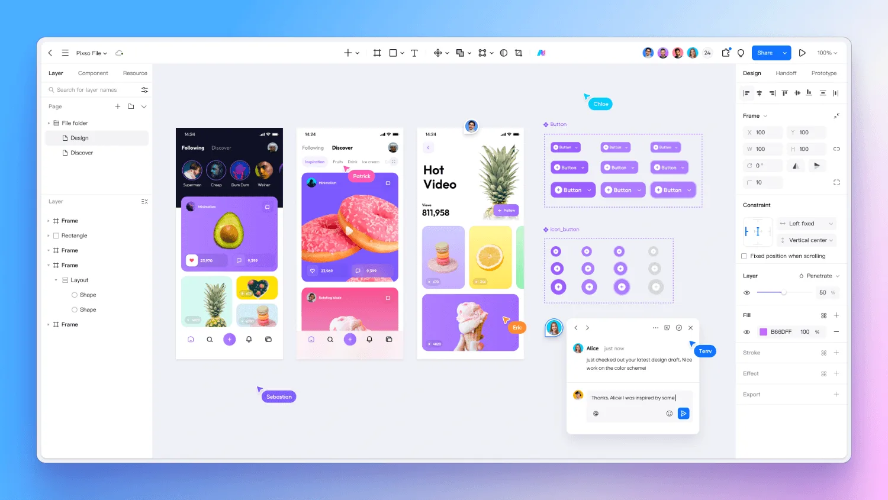
Конструкторы
С развитием веб-технологий создавать сайты стало доступно не только профессиональным разработчикам, но и обычным пользователям, не знакомым с языками программирования. Решением этой задачи стали конструкторы сайтов — специализированные онлайн-платформы, позволяющие собрать полноценный веб-ресурс с помощью визуального интерфейса, без написания кода вручную.
Tilda
Tilda по-прежнему остается эталоном визуального качества и креативных проектов среди конструкторов. Эта платформа идеально подходит для создания лендингов, портфолио, промо-сайтов и медийных проектов, где важен стильный и «дорогой» внешний вид. Главная уникальная фишка Тильды — режим Zero Block, который позволяет создавать уникальные макеты с пиксельной точностью, работая с элементами практически так же свободно, как в графическом редакторе вроде Figma.
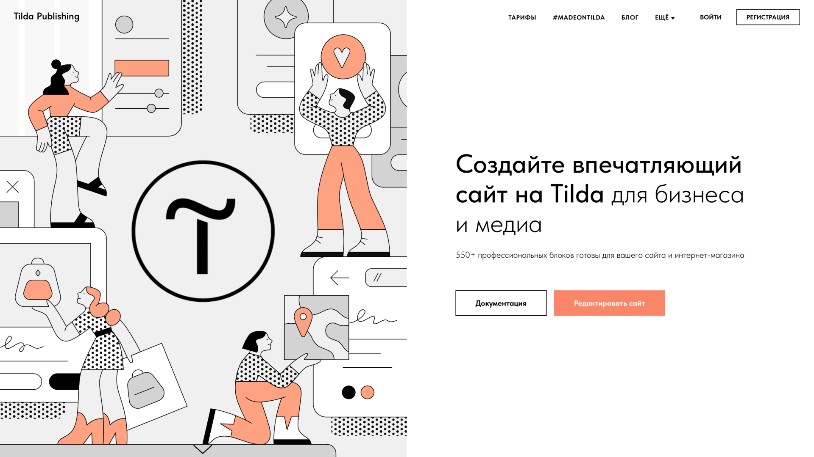
Важным улучшением последних лет стала возможность прямого импорта макетов из Figma в пару кликов, что значительно ускоряет перенос дизайнерских идей в работающий сайт. Однако стоит учитывать, что для сложных интернет-магазинов с нестандартными интеграциями возможностей Тильды может не хватить. Тарифы начинаются от 750 рублей в месяц.
uCoz
uCoz — бесплатная система управления сайтом и хостинг для сайтов, созданных с её использованием, разработанная компанией uKit Group. Конструктор uCoz состоит из панели управления с набором модулей и дополнительными настройками. Пользователь может настроить панель управления под свои потребности: оставить только те модули, которые будут использованы в работе. Модули uCoz могут использоваться как в единой связке для создания полнофункционального сайта, так и по отдельности, например, в качестве блог-платформы, интернет-магазина и др.
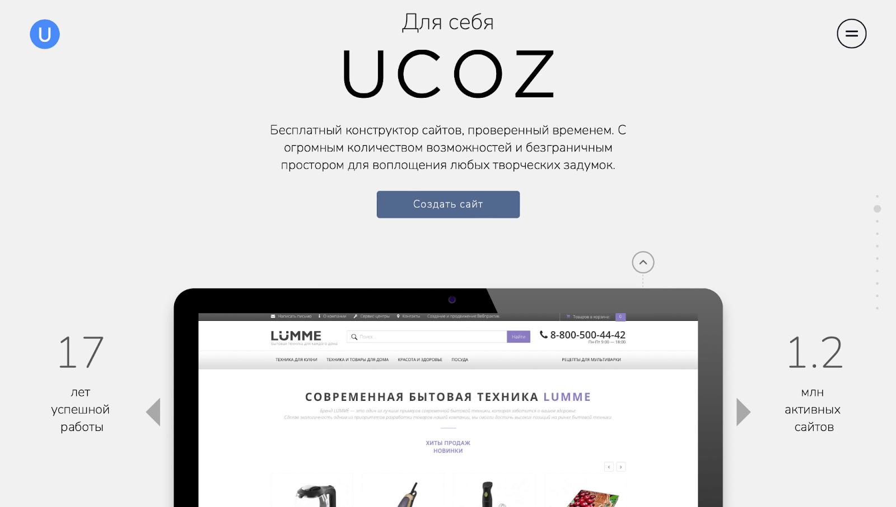
Webnode
Webnode — это простой конструктор сайтов, который работает по принципу перетаскивания блоков, благодаря чему создать сайт можно буквально за пару часов даже без опыта. Он предлагает готовые шаблоны, которые выглядят современно и сразу адаптированы под мобильные устройства. Удобно, что внутри уже встроены инструменты для SEO и аналитики, а также есть возможность сделать сайт на нескольких языках.
Для новичка важно, что здесь есть бесплатный тариф, чтобы попробовать свои силы, но если нужен профессиональный сайт, придется переходить на платную подписку, которая включает собственный домен и больше места для контента. Главный минус в том, что дизайн нельзя глубоко менять, а код сайта вам не открыт, поэтому, если захочется уникальных функций или точной подгонки под себя, конструктор упрется в потолок своих возможностей.
Craftum
Craftum является безусловным лидером российского рынка конструкторов в 2026 году. Эта платформа включена в реестр отечественного программного обеспечения и предлагает идеальный баланс цены и функциональности для российских пользователей. Искусственный интеллект Craftum умеет по краткому описанию бизнеса генерировать полную структуру страниц, писать продающие тексты и даже подбирать соответствующие изображения из библиотеки.
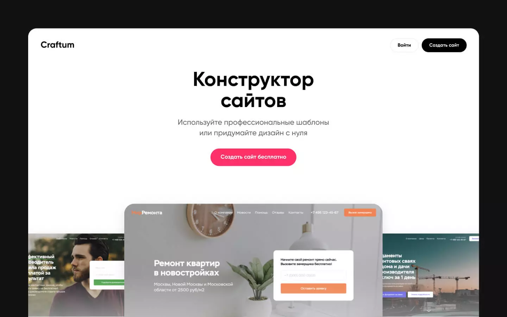
Платформа отлично масштабируется: можно начать с простого одностраничного лендинга, а затем, по мере роста бизнеса, развить сайт до полноценного интернет-магазина с десятками тысяч товаров. Особую ценность представляет наличие бесплатного тарифа, который позволяет создать рабочий сайт с доменом в зонах .online или .site без каких-либо вложений. Платные тарифы стартуют от 149 рублей в месяц.
WordPress
WordPress остаётся самой популярной CMS в мире — на нём работает более 40% всех существующих сайтов. Это настоящий «швейцарский нож» веб-разработки: благодаря тысячам плагинов и тем на этой платформе можно создать практически что угодно — от простого блога до сложного интернет-магазина, корпоративного портала или образовательной платформы.
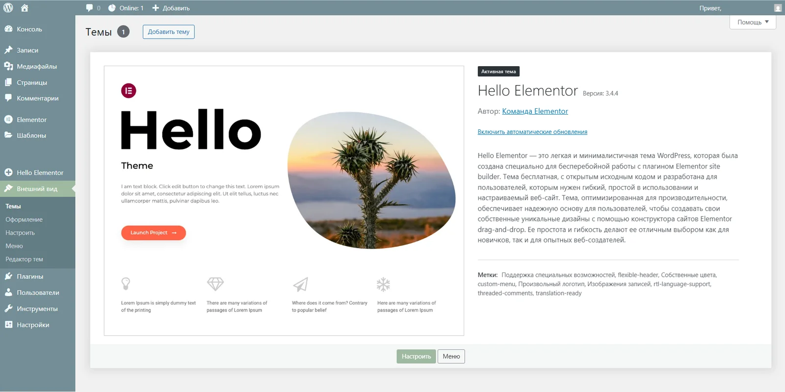
WordPress идеально подходит для контентных проектов, где важны SEO-продвижение и возможность масштабирования. Платформа даёт максимальную гибкость функционала за разумные деньги, но требует ответственности за безопасность, обновления плагинов и выбор хостинга.
За гибкость приходится платить: вам нужно самостоятельно заботиться о выборе и оплате хостинга, обеспечивать безопасность сайта, своевременно устанавливать обновления и следить за совместимостью различных плагинов. Сам движок распространяется бесплатно, но потребуются расходы на хостинг и, возможно, на покупку премиум-плагинов.
A5.ru
A5.ru — это российский бесплатный конструктор сайтов, который славится своей мощной бесплатной версией, позволяющей создавать полноценные интернет-магазины, форумы и блоги без вложений и с отсутствием встроенной рекламы. Его главные преимущества — обилие готовых шаблонов на любой вкус и глубокие интеграции с российскими сервисами, такими как 1С и популярные платежные системы, что делает его очень удобным инструментом для малого бизнеса. Однако платформа имеет и существенные недостатки: визуально шаблоны и сам интерфейс редактора выглядят устаревшими, а адаптация сайтов под мобильные устройства часто требует ручной доработки, так как автоматическое сжатие работает неидеально.

Домен
Домен — это уникальный адрес вашего сайта в интернете, который пользователи вводят в строку браузера, чтобы попасть на нужную страницу. Технически каждый компьютер или сайт в сети идентифицируется по IP-адресу — набору цифр вроде 185.65.151.226, но запоминать такие комбинации людям неудобно . Именно поэтому была придумана система доменных имён (DNS), которая преобразует понятные буквенные адреса в цифровые и наоборот, позволяя нам пользоваться простыми именами вместо сложных чисел . Доменное имя состоит из нескольких частей, разделённых точками, и строится по иерархическому принципу: уровни читаются справа налево — от самого верхнего к нижнему
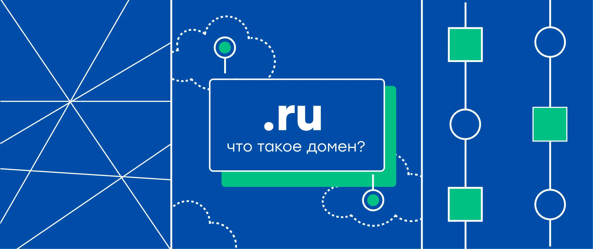
Какими бывают домены?
Прежде всего, они делятся по уровням. Домены первого уровня (их ещё называют доменными зонами) — это окончания вроде .ru, .com, .org . Они бывают национальными (ccTLD), закреплёнными за конкретными странами, например .ru для России, .kz для Казахстана, .de для Германии, а также общими (gTLD) без географической привязки — .com для коммерческих проектов, .org для некоммерческих организаций, .net для сетевых сообществ . Кроме того, существуют новые общие домены (new gTLD), которые появились относительно недавно и позволяют выбрать зону по роду деятельности: .shop, .online, .tech, .agency, .photo и даже .moscow или .tatar . Домен второго уровня — это основное, уникальное имя, которое вы придумываете сами, например, название вашей компании или проекта . А домены третьего уровня (поддомены) создаются на основе домена второго уровня и используются для выделения отдельных разделов, как, например, help.google.com или forum.yoursite.ru .
Как выбрать имя для домена?
Это ответственный шаг, ведь адрес будет работать на вас или против вас. Имя должно быть коротким, запоминающимся и легко произноситься вслух . Лучше избегать сложных букв, которые трудно передать латиницей (например, «щ» превращается в «shch»), а также дефисов и цифр, если они не являются частью бренда — их сложнее продиктовать по телефону . Допустимая длина имени — от 2 до 63 символов, начинаться оно должно с буквы или цифры . В национальных зонах (.ru) можно использовать только латиницу, цифры и дефис, а в зоне .рф допустима кириллица . Также желательно, чтобы имя отражало тематику сайта или содержало ключевые слова — это полезно для поискового продвижения и помогает пользователю сразу понять, о чём ресурс .
Где и как купить домен?
Важно понимать: домен нельзя купить раз и навсегда — он сдаётся в аренду на определённый срок, обычно от одного года, и требует ежегодного продления . Покупка происходит через компании-регистраторы, аккредитованные для продажи доменных имён. Самые популярные и надёжные регистраторы в России — это Reg.ru, Nic.ru (Руцентр), Webnames.ru, а также домены можно приобрести у хостинг-провайдеров, таких как Timeweb, Beget или Sprinthost . Выбирая регистратора, обращайте внимание не только на цену первого года, но и на стоимость продления — у разных компаний она может сильно отличаться . Reg.ru славится удобной панелью и хорошей поддержкой, Nic.ru — надёжностью и дополнительными сервисами, но цены там часто выше рынка, особенно на продление . Timeweb и Webnames могут быть выгоднее для международных зон вроде .com . После оплаты регистрации вы становитесь администратором домена, и ваши данные попадают в открытую базу WHOIS — службу, где можно проверить информацию о владельце любого адреса . В российских зонах .ru и .рф личные данные физических лиц скрыты, связаться с владельцем можно только через специальную форму .
Перед покупкой обязательно проверьте выбранное имя через форму на сайте регистратора — если оно занято, система предложит альтернативные варианты или покажет, что домен продаётся на вторичном рынке (такие домены обычно дороже) . Иногда удачные имена уже зарегистрированы киберсквоттерами, которые перепродают их по завышенной цене — это тоже стоит учитывать .
Сервер
После того как вы зарегистрировали домен, перед вами встает следующий вопрос: где разместить сайт? Доменное имя — это только адрес, а сам сайт состоит из файлов, изображений и базы данных. Чтобы посетители могли зайти на ваш ресурс в любое время, все эти данные должны храниться на компьютере, который работает постоянно и без перебоев.
Выбор сервера (или хостинга) — одно из главных решений при создании сайта. От него зависит, насколько быстро будет загружаться ваш ресурс, как часто будут возникать сбои и сколько вы будете платить за обслуживание.
Виртуальный хостинг (Shared Hosting)
Это наиболее распространенный и доступный тип хостинга, при котором множество сайтов размещается на одном физическом сервере. Ресурсы сервера, включая процессор, оперативную память и дисковое пространство, распределяются между всеми пользователями автоматически. К особенностям данного типа можно отнести отсутствие необходимости в администрировании сервера, готовое к работе окружение сразу после оплаты, а также ограничения по нагрузке и количеству посещений. Основными преимуществами являются минимальная стоимость от 100–200 рублей в месяц, быстрое начало работы без специальных знаний и полное техническое обслуживание со стороны провайдера.
.jpg)
К недостаткам относится нестабильность при высоких нагрузках, зависимость от действий других пользователей на сервере и отсутствие доступа к настройкам серверного ПО. Виртуальный хостинг подходит для сайтов-визиток, персональных блогов и небольших проектов с посещаемостью до 500–1000 человек в сутки.
Виртуальный выделенный сервер (VPS/VDS)
Это технология, при которой физический сервер разделяется на несколько изолированных виртуальных машин. Каждая такая машина имеет гарантированный объем ресурсов и полностью независима от соседних виртуальных серверов. Особенностями VPS являются гарантированная выделенная доля ресурсов процессора и памяти, полный root-доступ к серверу, возможность установки любого программного обеспечения и свободный выбор операционной системы. Преимущества включают стабильную производительность независимо от других проектов, гибкость настройки под конкретные задачи, возможность масштабирования и оптимальное соотношение цены и возможностей.
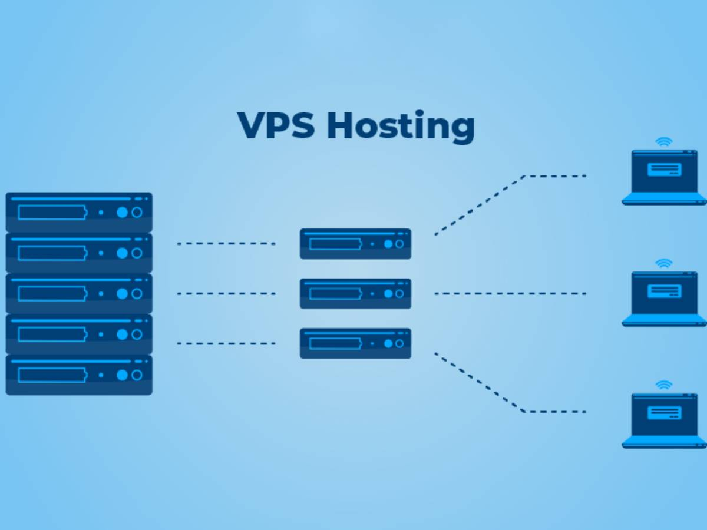
Стоимость начинается от 300–500 рублей в месяц. К недостаткам можно отнести необходимость базовых навыков администрирования и самостоятельное обеспечение безопасности сервера. Данный тип хостинга оптимален для интернет-магазинов, корпоративных сайтов, проектов на популярных CMS и сайтов с посещаемостью от нескольких тысяч человек в день.
Выделенный сервер (Dedicated Server)
Выделенный сервер представляет собой аренду целого физического сервера, который предоставляется в исключительное пользование одному клиенту. Все аппаратные ресурсы сервера доступны только для одного проекта. Особенностью является полное владение всеми ресурсами физического сервера, отсутствие соседей по оборудованию и возможность выбора конкретной конфигурации комплектующих. К преимуществам относятся максимальная производительность, полный контроль над аппаратным обеспечением, отсутствие конкуренции за ресурсы и способность решать самые ресурсоемкие задачи. Стоимость аренды начинается от 3000–4000 рублей в месяц.
Недостатками являются высокая цена, необходимость профессионального администрирования и риски при выходе оборудования из строя. Выделенные серверы подходят для крупных порталов, проектов с высокой посещаемостью, сервисов с особыми требованиями к производительности, а также видеохостингов и файлообменников.
Облачный сервер (Cloud Server)
Облачный сервер — это инфраструктурное решение, при котором ресурсы предоставляются из облачного кластера, объединяющего множество физических серверов. Проект работает одновременно на нескольких машинах, что обеспечивает высокую отказоустойчивость. Особенностями являются распределенная архитектура, возможность мгновенного изменения конфигурации и оплата фактически потребленных ресурсов. Преимущества включают высокую гибкость с возможностью изменения мощности в реальном времени, отказоустойчивость за счет автоматического переключения между серверами и оптимальность для проектов с неравномерной нагрузкой.
.png)
К недостаткам относится сложность прогнозирования расходов при резких скачках трафика и необходимость понимания принципов работы облачной инфраструктуры. Облачные серверы идеально подходят для проектов с непредсказуемыми пиковыми нагрузками, стартапов на этапе роста, интернет-магазинов в период сезонных распродаж и сервисов, требующих высокой надежности.
Где арендавать сервер?
Timeweb
Крупнейший российский хостер предлагает виртуальный хостинг от 150 до 200 рублей в месяц с диском 10–15 ГБ на SSD. Плюсами являются удобная панель управления, бесплатный SSL и круглосуточная поддержка. Минусы — ограничения на дешёвых тарифах по числу сайтов и баз данных, а также возможное падение скорости при высокой нагрузке на соседние проекты.

Nic.ru
Старейший регистратор и хостинг-провайдер с собственными дата-центрами TIER III. Виртуальные серверы стоят от 300 до 500 рублей в месяц за 20–30 ГБ NVMe/SSD, выделенные — от 3–5 тысяч рублей. Плюсы: высокая отказоустойчивость, защита от DDoS, юридическое сопровождение (сертификаты ФС). Минусы: высокие цены, сложная панель управления, отсутствие ультрабюджетных тарифов.

Beget
Провайдер с фокусом на отказоустойчивость и качественную поддержку. Тарифы стартуют от 200 до 250 рублей в месяц за 5–10 ГБ SSD. Достоинства: авторезервное копирование, тестовый период, продуманный интерфейс. Недостатки: цена выше средней и нехватка оперативной памяти на начальных тарифах для тяжёлых CMS.

Reg.ru
Крупный регистратор доменов с хостингом от 100 до 150 рублей в месяц и диском 5–10 ГБ. Плюсы: частые акции, интеграция с конструкторами, низкий входной порог. Минусы: медленная поддержка, перегруженная панель управления и нестабильная скорость загрузки на базовых тарифах.

FirstVDS
Специализируется на виртуальных выделенных серверах (VPS/VDS). Стоимость начинается от 300–350 рублей в месяц за 20–30 ГБ диска. Плюсы: гибкость настроек, гарантированные ресурсы, подходит для требовательных проектов. Минусы: требует знаний администрирования, цена выше обычного хостинга.

AdminVPS
Провайдер VPS с дата-центрами в РФ и Европе. Тарифы стартуют от 250–300 рублей в месяц за 10–20 ГБ диска. Достоинства: быстрая поддержка, бесплатный перенос сайтов, хорошее соотношение цены и качества. Недостатки: ограничения по трафику на младших тарифах и интерфейс, неочевидный для новичков.